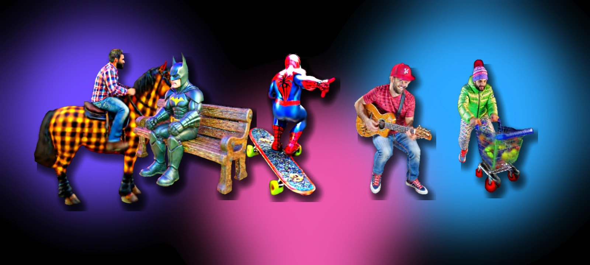
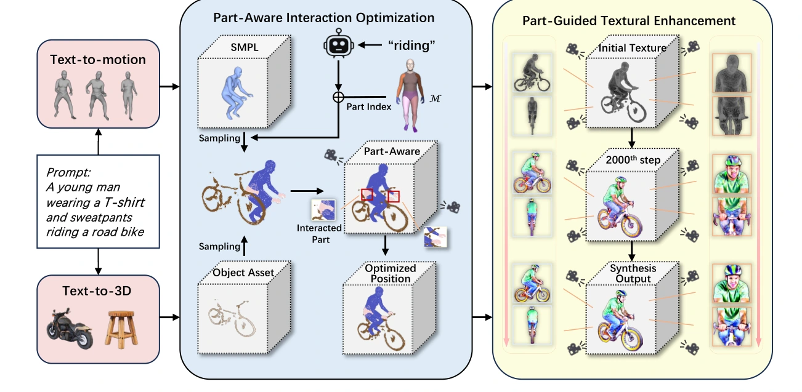
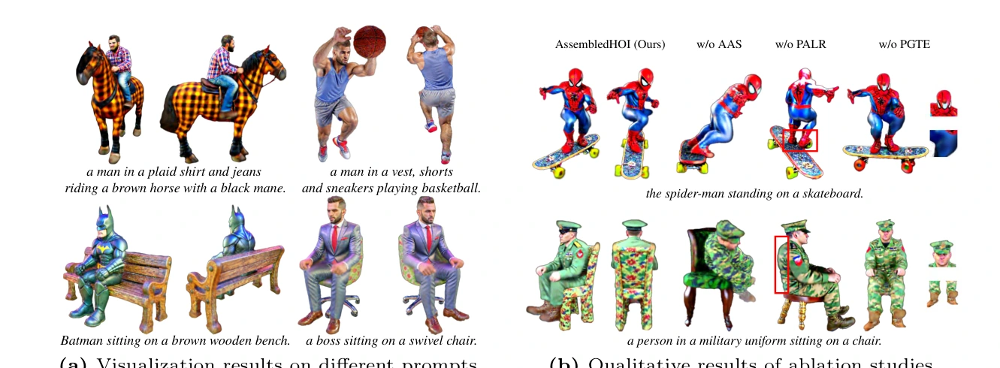
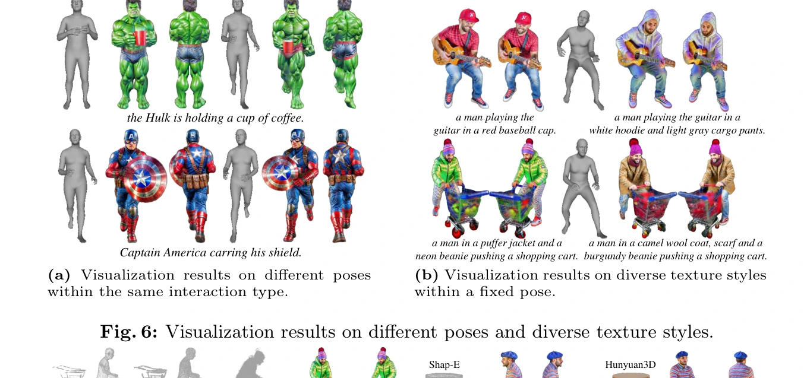
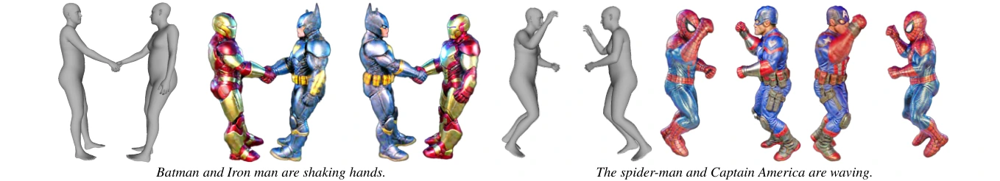

ECCV 2026 Workshop
AssembledHOI
Compositional Synthesis of 3D Human-Object Interaction via Assembling Gaussian Priors
1 Beijing University of Posts and Telecommunications
2 University of Chinese Academy of Sciences
3 Beihang University
4 Tsinghua University

TEXT → STRUCTURED PRIORS → INTERACTION
Zero-shot 3D HOI synthesis through compositional Gaussian assembly.
OVERVIEW
Assemble first. Refine where interaction matters.
AssembledHOI is a zero-shot framework for 3D human-object interaction synthesis. Instead of optimizing the human and object as one entangled scene from the start, it initializes them as structured Gaussian priors, jointly optimizes their spatial configuration, and then focuses supervision on interaction-critical body parts and local texture regions. The result is a controllable pipeline that targets both geometric plausibility and texture fidelity while keeping optimization efficient.
01
Structured Assembly
Decoupled human and object Gaussian priors preserve structure and expose explicit pose, scale, and spatial controls.
Gaussian Priors02
Part-Aware Interaction
Adaptive anchoring and body-part-aware gradient modulation focus optimization on interaction-relevant regions.
AASPALR
03
Part-Guided Texture
Close-up, localized supervision refines faces and contact areas without sacrificing global consistency.
PGTEMETHOD
From text to assembled 3D interaction
A two-stage pipeline separates structural alignment from fine-grained appearance refinement.

Initialize
Sample a human pose from a text-to-motion prior and an object asset from a text-to-3D prior, then convert both into dense Gaussian representations.
Assemble & Align
Optimize human/object 6-DoF pose and scale, stabilize motion with adaptive anchoring, and emphasize interaction-critical body parts.
Enhance
Use global multi-view supervision together with close-up part views to strengthen texture and local interaction detail.
RESULTS
Diverse interactions, explicit ablations, controllable appearance
The project page surfaces the visual evidence first; the paper and supplement contain the complete experimental protocol.


EFFICIENCY
25 minutes on a single RTX 3090
The framework uses 2,400 optimization iterations and reports 17 GB GPU memory usage on RTX 3090.
QUANTITATIVE COMPARISON
Core metrics from the paper
| Method | CLIP ↑ | GPT-4V Select ↑ | R-Collision ↓ | R-Contact ↑ | Time ↓ |
|---|---|---|---|---|---|
| DreamFusion | 0.3027 | 3.78% | 20.5% | 21.6% | 1.8 h |
| Magic3D | 0.3179 | 5.36% | 19.6% | 13.2% | 2.0 h |
| TextMesh | 0.2761 | 0.76% | 17.3% | 19.5% | 1.5 h |
| InterFusion | 0.3308 | 26.5% | 16.8% | 26.9% | 4.5 h |
| DreamHOI | 0.2932 | 10.3% | 15.9% | 29.8% | 11.5 h |
| InteractAnything | 0.2968 | – | – | 52.1% | – |
| AssembledHOI | 0.3835 | 53.3% | 13.6% | 53.7% | 25 min |
EXTENSION
Assembly naturally extends beyond human-object pairs.
The same compositional idea can recombine structured components for zero-shot human-human interaction, illustrating the broader generalization of an assembly-based representation.

CITATION
Cite AssembledHOI
Replace the proceedings metadata here if the official ECCV workshop BibTeX changes after publication.
@inproceedings{dong2026assembledhoi,
title = {AssembledHOI: Compositional Synthesis of 3D Human-Object Interaction via Assembling Gaussian Priors},
author = {Dong, Hongyong and Chu, Jiaming and Yao, Fanglong and Fan, Zhaoxin and Zhao, Hao and Wang, Li and Jin, Lei},
booktitle = {The 3rd Workshop on Scalable 3D Scene Generation and Geometric Scene Understanding},
year = {2026}
}